| Name | Image | Rarity | Type | Cost | Description |
|---|
| Defend |  | Basic | Skill | 1 | Gain 5 (8) Block. |
| Double Strike |  | Basic | Attack | 1 | Peel 1: Deal 6 (8) damage twice. |
| Parasitic Shell | 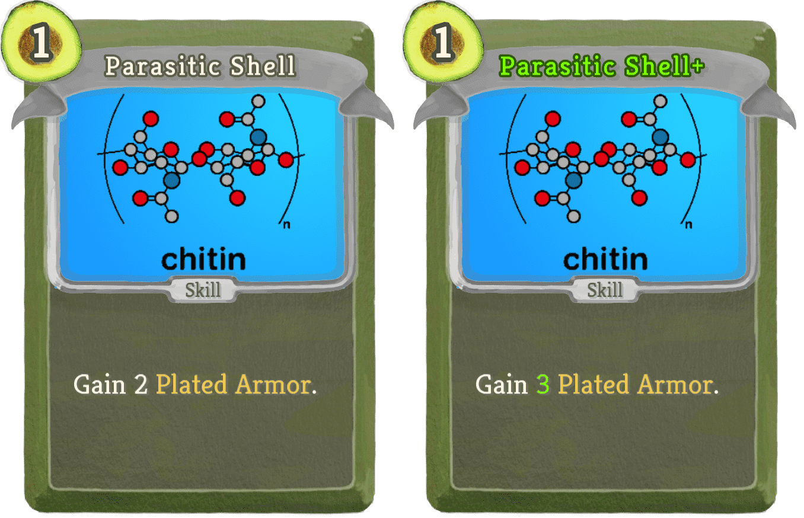 | Basic | Skill | 1 | Gain 2 (3) Plated Armor. |
| Strike | 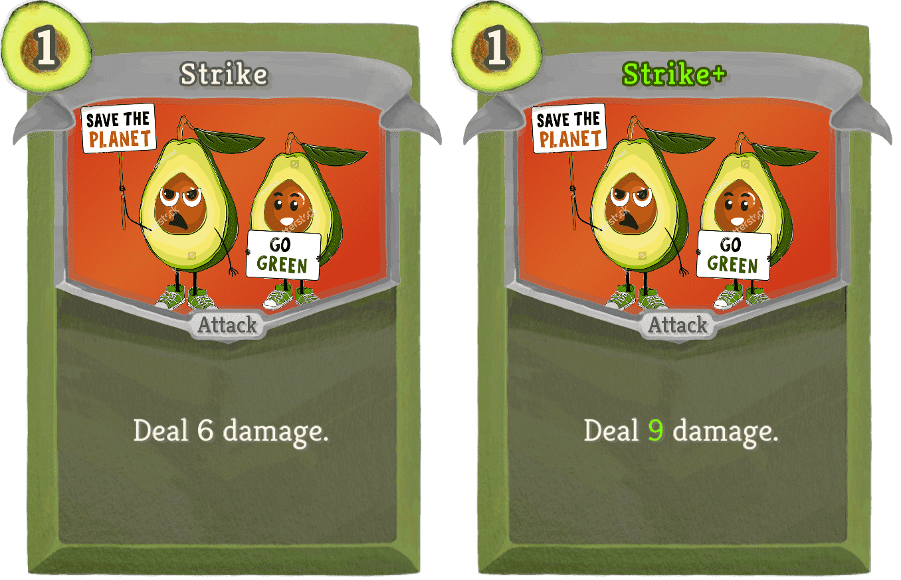 | Basic | Attack | 1 | Deal 6 (9) damage. |
| Bite |  | Special | Skill | | Add a Bite into your hand. |
| Grow |  | Special | Power | | Gain 2 (3) Strength. |
| Apoptosis |  | Common | Skill | 0 | Peel 1: (1 twice:) Gain 1 Plated Armor (twice) and draw 1 card. |
| Armed Pit |  | Common | Attack | 2 | Deal 6 (8) damage twice. If you have Peeled this turn, gain [E] [E] . |
| Constrict |  | Common | Skill | 1 | Innate Apply 6 (8) Constricted. |
| Ethylene Gas |  | Common | Skill | 0 | Gain 2 (3) [E] . Shuffle a Slimed into your draw pile. |
| Flesh Barrier | 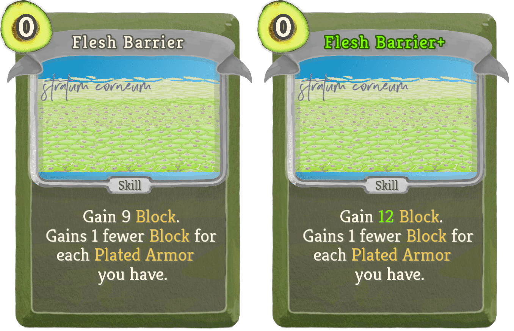 | Common | Skill | 0 | Gain 9 (12) Block. Gains 1 fewer Block for each Plated Armor you have. |
| Heavy Slam |  | Common | Attack | 1 | Deal 6 damage. Deals 1 (2) additional damage for each Plated Armor you have. |
| Peel It Off |  | Common | Skill | 1 | Peel 1: Gain 10 (13) Block and Draw 1 Card. |
| Phototropism |  | Common | Skill | 1 | Innate. Draw 2 (3) cards. |
| Pit and Run |  | Common | Attack | 1 | Deal 3 damage to a random enemy twice (thrice). Draw 2 cards. |
| Plate Snap | 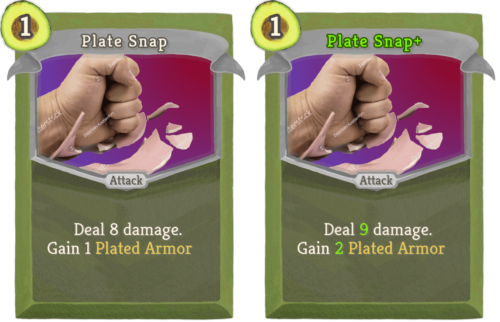 | Common | Attack | 1 | Deal 8 (9) damage. Gain 1 (2) Plated Armor |
| Plateheaded |  | Common | Skill | 1 | Gain 1 Plated Armor. Draw 1 (2) Card(s). |
| Rain Of Pits | 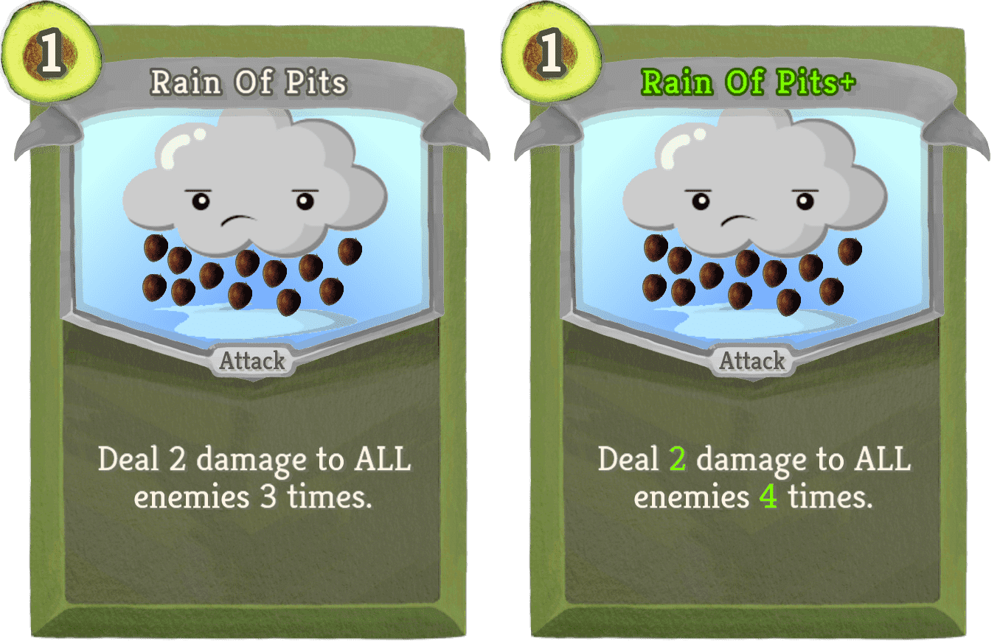 | Common | Attack | 1 | Deal 2 damage to ALL enemies 3 (4) times. |
| Reclaim |  | Common | Skill | 1 | Gain 7 (10) Block. Reclaim 1 card. |
| Scavenger |  | Common | Attack | 1 | Deal 9 (12) damage. Next turn, Reclaim 1 card. |
| Sow Doubt |  | Common | Skill | 1 | Gain 6 (8) Block. Apply 1 (2) Weak. |
| Squishy Strike |  | Common | Attack | 0 | Deal 8 (11) damage. Add a Slimed into your hand. |
| Suck |  | Common | Attack | 1 | Deal 8 (10) damage. Suck 2 (3) HP. |
| Tendril Swipe | 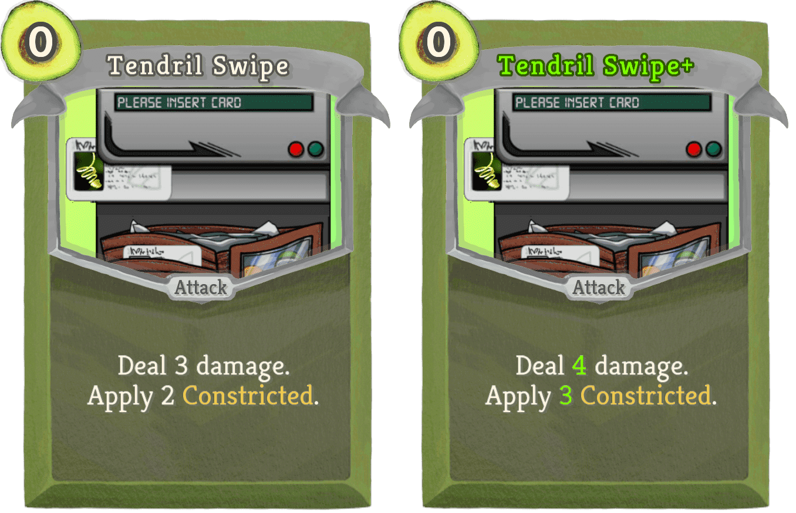 | Common | Attack | 0 | Deal 3 (4) damage. Apply 2 (3) Constricted. |
| Acrid Puke |  | Uncommon | Skill | 1 | Apply 2 (3) Weak and 2 (3) Vulnerable to ALL Enemies. Add a Slimed into your hand. Exhaust. |
| Balanced Diet | 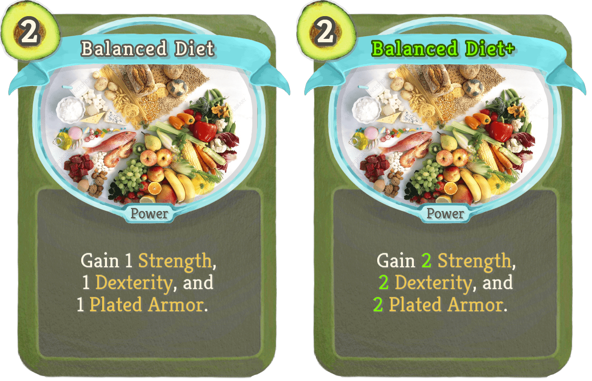 | Uncommon | Power | 2 | Gain 1 (2) Strength, 1 (2) Dexterity, and 1 (2) Plated Armor. |
| Baseplate |  | Uncommon | Power | 1 | If you end your turn without Block, gain 4 (6) Block. |
| Eat Scrap |  | Uncommon | Skill | 0 | Heal 5 (7) HP. Add a Slimed into your hand. Exhaust. |
| Electroplating | 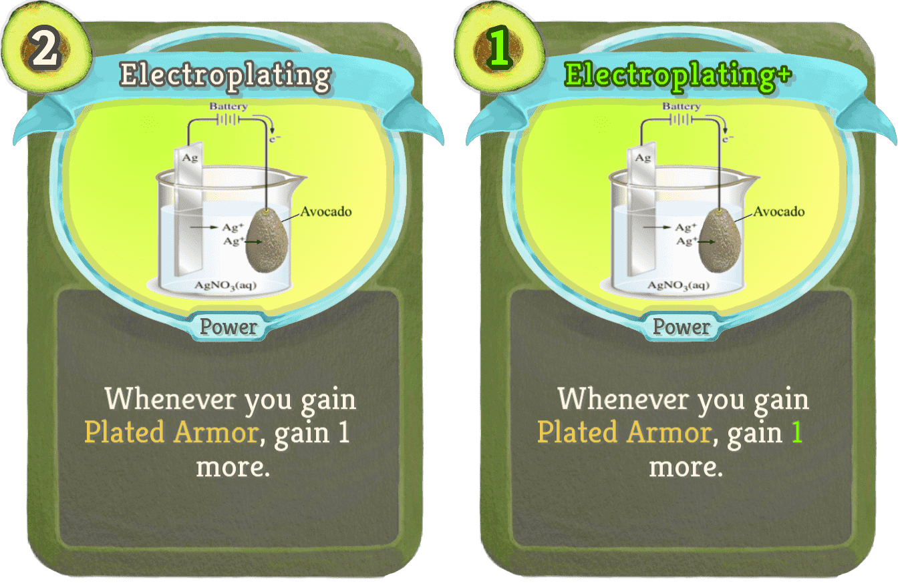 | Uncommon | Power | 2 (1) | Whenever you gain Plated Armor, gain 1 more. |
| Encapsulate |  | Uncommon | Skill | 2 | Apply 3 (4) Plated Armor. Apply 3 Constricted 3 (4) times. |
| Expiration Date |  | Uncommon | Attack | 1 | Deal 4 (6) damage. Each turn, increase this card's damage by 2 (3) for this combat. |
| Feckless Whirl |  | Uncommon | Attack | 1 | Lose 2 HP. Deal 12 (16) damage to ALL enemies. |
| Fell |  | Uncommon | Attack | 2 | Innate. Deal 21 damage. Apply 2 (3) Vulnerable. |
| Fungal Elixir | 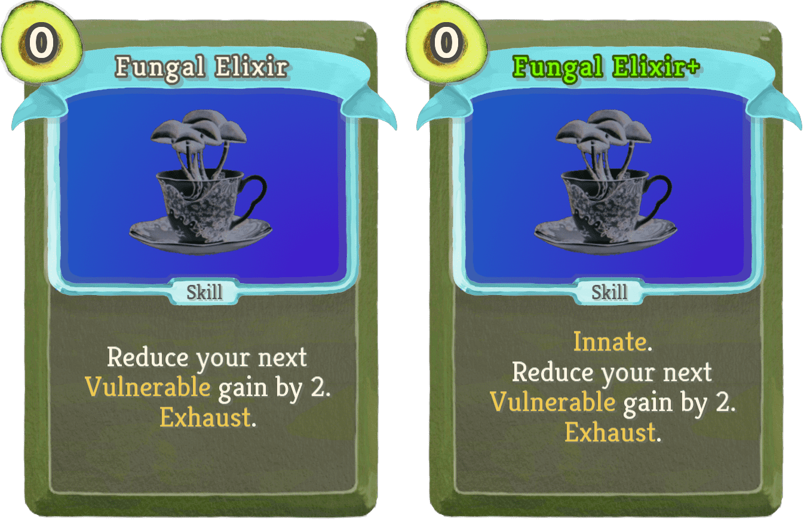 | Uncommon | Skill | 0 | (Innate.)Reduce your next Vulnerable gain by 2. Exhaust. |
| Growth |  | Uncommon | Power | 1 | Next turn, Gain 3 (4) Strength. |
| Harden |  | Uncommon | Skill | 2 | Gain 7 (9) Block. Gain 3 (4) Plated Armor. |
| Lunacy |  | Uncommon | Skill | X | At the start of your next X (X+1) turns, reduce the cost of a random card in your hand to 0 this combat. Exhaust. |
| Mucous Embrace |  | Uncommon | Power | 2 (1) | Whenever a Status card is Exhausted, draw 2 cards. |
| Necrosis |  | Uncommon | Skill | 0 | Gain 2 (1) Vulnerable. Gain 5 Plated Armor. Exhaust. |
| One Pit Wonder |  | Uncommon | Attack | 1 | Innate. Deal 16 (20) damage. Exhaust. |
| Overguac |  | Uncommon | Skill | 0 | Peel 2 (1): Draw 2 cards. |
| Peel Hook |  | Uncommon | Attack | 1 | Deal 6 (9) damage. Peel 1: Gain [E] and draw 1 card. |
| Peel No Pain |  | Uncommon | Power | 1 | Whenever you Peel, gain 3 (4) Block. |
| Perfected Suck | 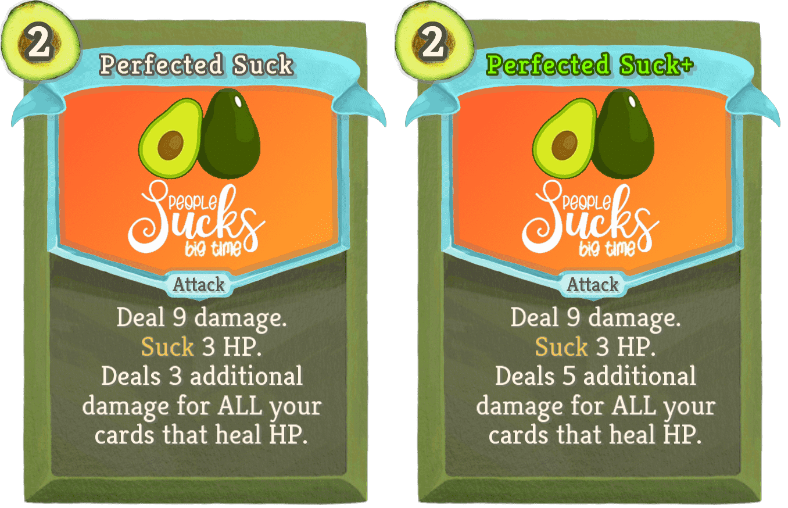 | Uncommon | Attack | 2 | Deal 9 damage. Suck 3 HP. Deals 3 (5) additional damage for ALL your cards that heal HP. |
| Phosphorylation | 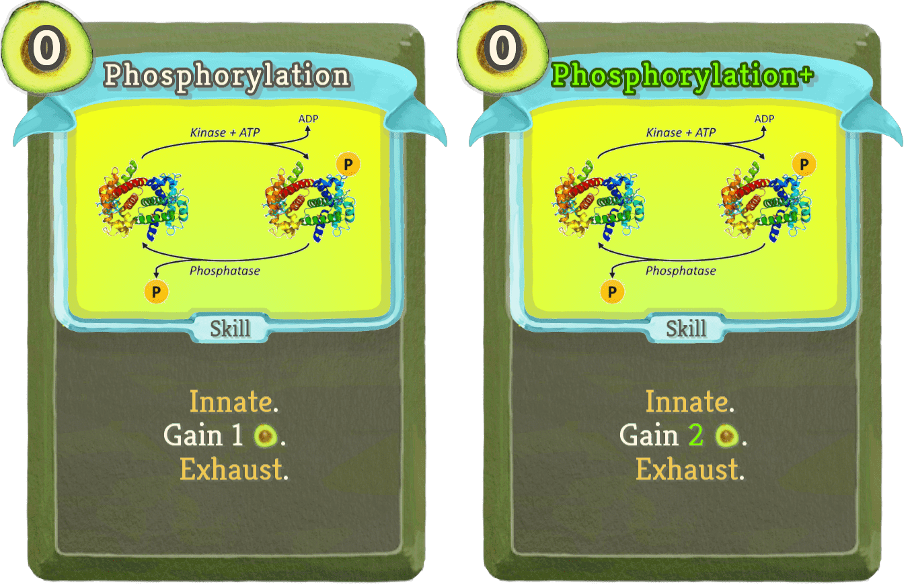 | Uncommon | Skill | 0 | Innate. Gain 1 (2)[E]. Exhaust. |
| Pit Storm |  | Uncommon | Attack | X | Deal 3 damage twice X (X+1) times. |
| Pitted Armor |  | Uncommon | Skill | 1 | Lose 2 HP. Gain 13 (17) Block. |
| Ratrops | 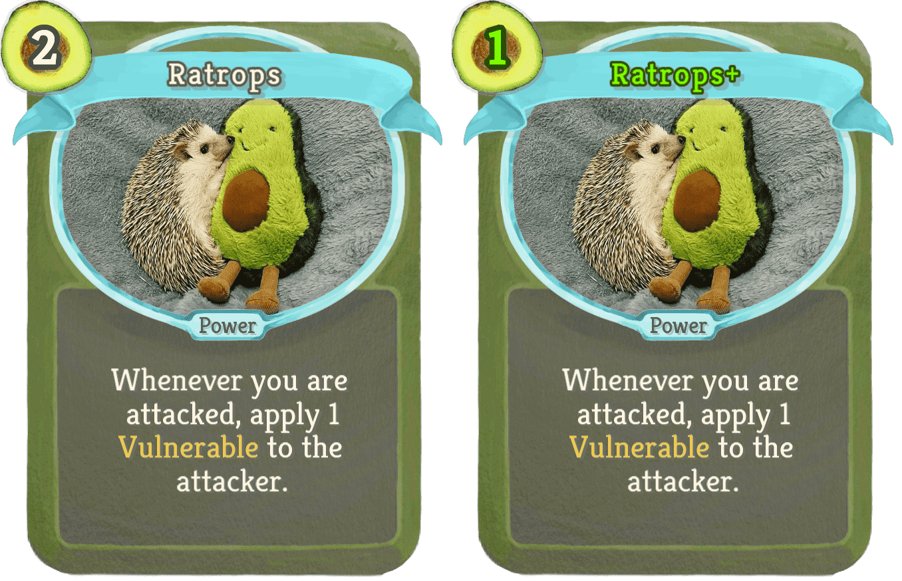 | Uncommon | Power | 2 (1) | Whenever you are attacked, apply 1 Vulnerable to the attacker. |
| Reabsorb | 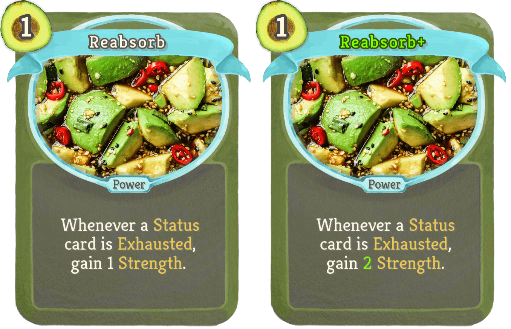 | Uncommon | Power | 1 | Whenever a Status card is Exhausted, gain 1 (2) Strength. |
| Rummage | 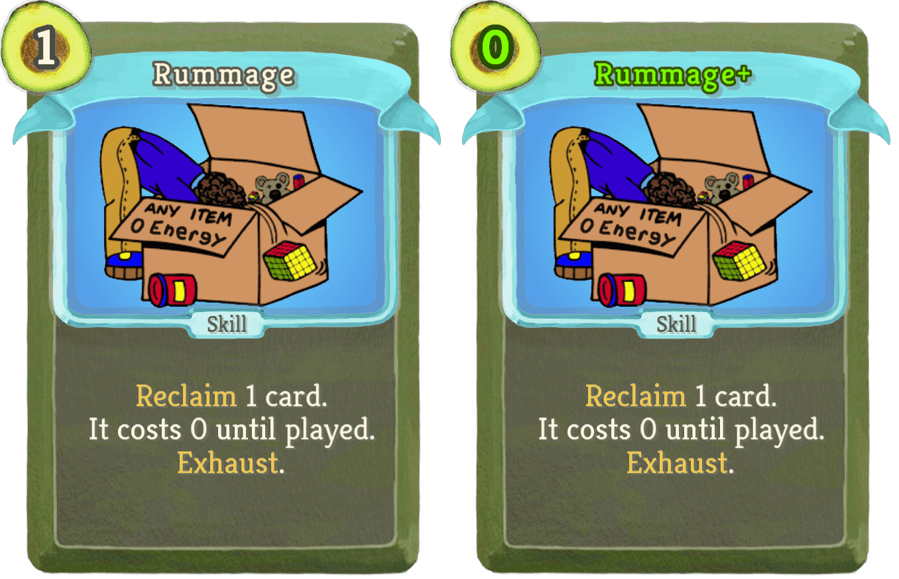 | Uncommon | Skill | 1 (0) | Reclaim 1 card. It costs 0 until played. Exhaust. |
| Shrapnel |  | Uncommon | Power | 0 | Whenever you Peel, deal 4 (6) damage to a random enemy. |
| Splinter |  | Uncommon | Attack | 2 | Peel 1 and deal 10 (13) damage for each 2 Plated Armor you have. Exhaust. |
| Spoils of War |  | Uncommon | Skill | 1 | Choose 1 of 3 skills of any color to add into your hand. It costs 0 until played. Exhaust. (not Exhaust.) |
| Strangulation | 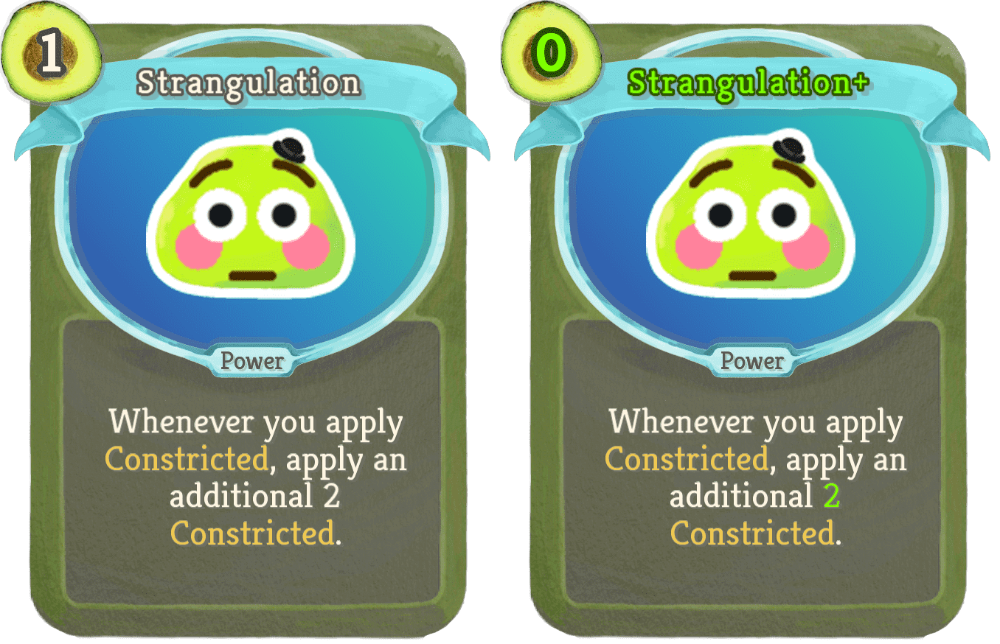 | Uncommon | Power | 1 (0) | Whenever you apply Constricted, apply an additional 2 Constricted. |
| Suffocate |  | Uncommon | Skill | 1 | Apply 4 (6) Constricted. ALL enemies take damage equal to their Constricted. |
| Toast | 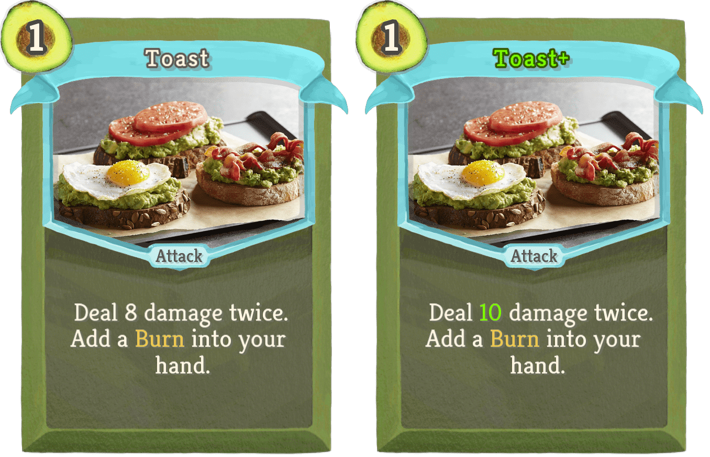 | Uncommon | Attack | 1 | Deal 8 (10) damage twice. Add a Burn into your hand. |
| Wrap |  | Uncommon | Skill | X | Apply 4 Constricted to ALL enemies X (X+1) Times. Exhaust. |
| Autophagia | 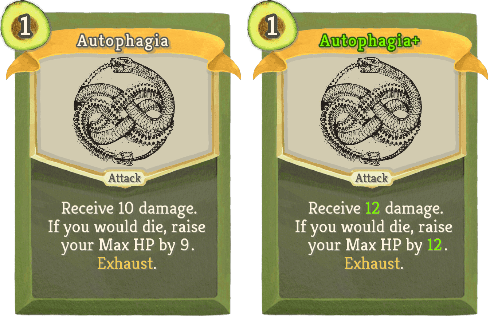 | Rare | Attack | 1 | Receive 10 (12) damage. If you would die, raise your Max HP by 9 (12). Exhaust. |
| B'Gone |  | Rare | Attack | 2 | Deal 26 (34) damage to ALL enemies. Gain 2 Vulnerable. |
| Compost |  | Rare | Skill | 1 | Shuffle a copy (2 copies) of the last card played this combat into your draw pile. Exhaust. |
| Eau d'Avocat | 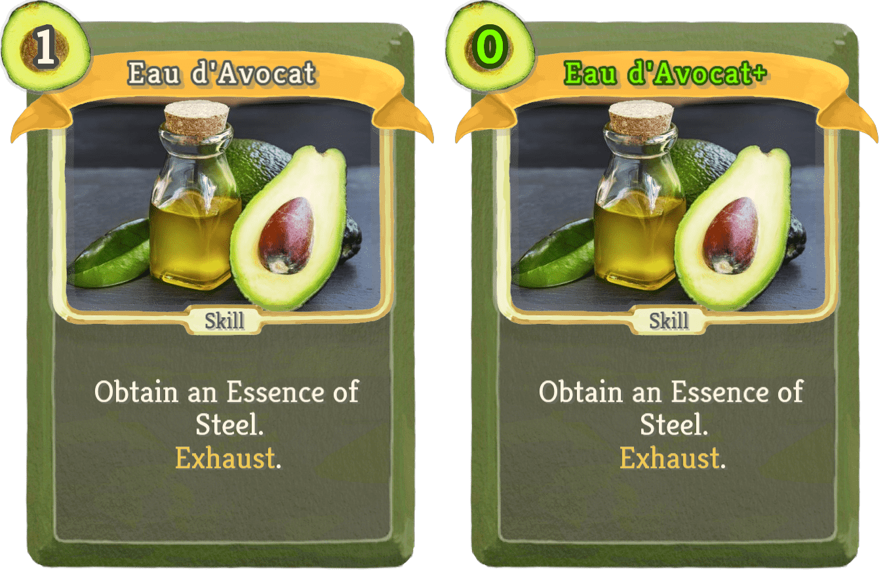 | Rare | Skill | 1 (0) | Obtain an Essence of Steel. Exhaust. |
| Ensnare |  | Rare | Power | 1 | Whenever you receive unblocked attack damage, apply 4 (6) Constricted to the attacker. |
| Extractor |  | Rare | Attack | 2 | Deal 3 (4) damage. Gain Plated Armor equal to unblocked damage. Exhaust. |
| Flash Freeze |  | Rare | Skill | 2 | Gain 10 (14) Block. Block is not removed at the start of your next 2 turns. |
| Forge |  | Rare | Attack | 1 | Deal 10 (14) damage. Gain 1 Plated Armor. If Fatal, permanently increase this gain by 1. Exhaust. |
| Goorruption |  | Rare | Power | 2 (1) | Status cards cost 0 and can be played. Whenever you play a Status card, Exhaust it. |
| Overblock |  | Rare | Skill | 0 | Gain 30 (40) Block. You cannot gain Block from cards for 2 turns. Exhaust. |
| Overripe |  | Rare | Power | 1 | Gain 4 (5) Strength. At the start of your turn, lose 1 Strength. |
| Parasitic Form | 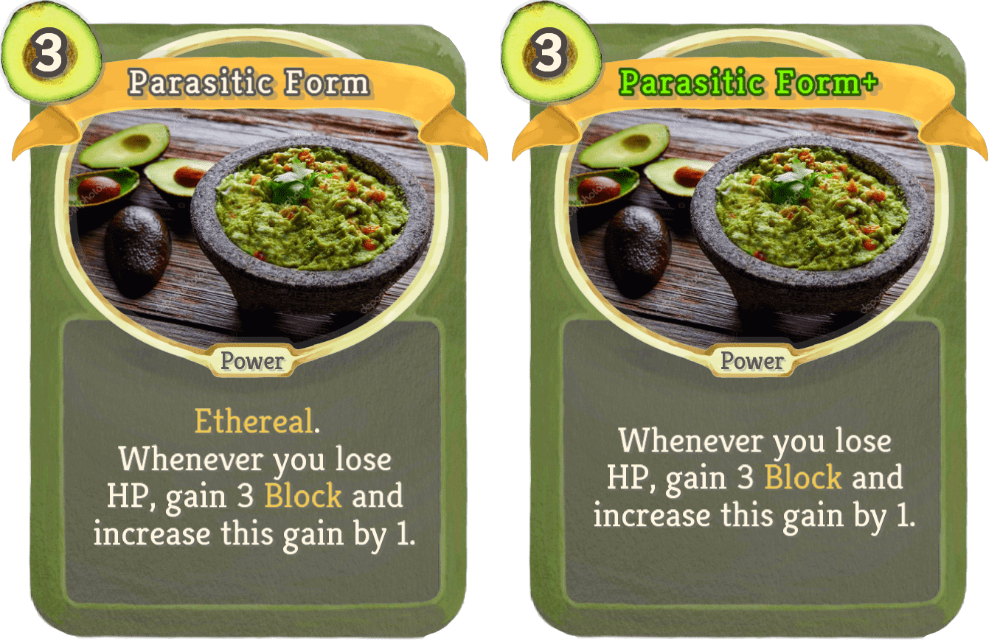 | Rare | Power | 3 | Ethereal. (not Ethereal.) Whenever you lose HP, gain 3 Block and increase this gain by 1. |
| Plated Farmer | 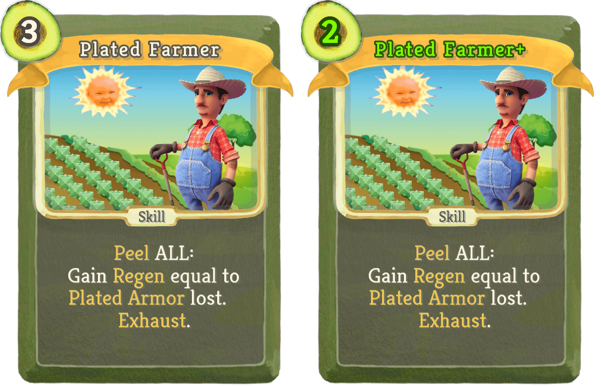 | Rare | Skill | 3 (2) | Peel ALL: Gain Regen equal to Plated Armor lost. Exhaust. |
| RAT |  | Rare | Power | 4 (3) | At the start of your turn, choose to gain 2 Strength or add a Bite into your hand. |
| Savagery |  | Rare | Power | 1 (0) | At the start of your turn, lose 1 HP and reduce the cost of a random card in your hand to 0 for the turn. |
| Shell Smash |  | Rare | Skill | 0 | Peel 2 (1), Gain [E] , and draw 1 card for each 2 Plated Armor you have. Exhaust. |
| Slimy Shield |  | Rare | Status | 2 | Gain 3 (4) Block for ALL your Status cards, including Exhaust pile. |
| Suckamid |  | Rare | Skill | 2 | Heal 7 (10) HP. Retain your hand for 2 turns. Exhaust. |
| Suction | 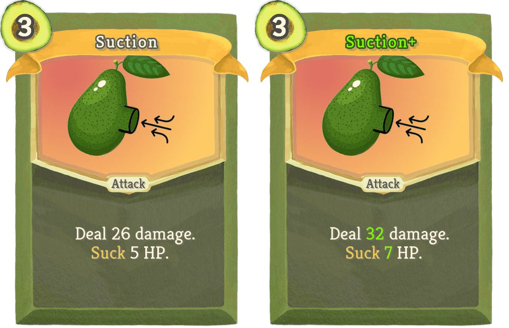 | Rare | Attack | 3 | Deal 26 (32) damage. Suck 5 (7) HP. |
| Toxoplasmosis | 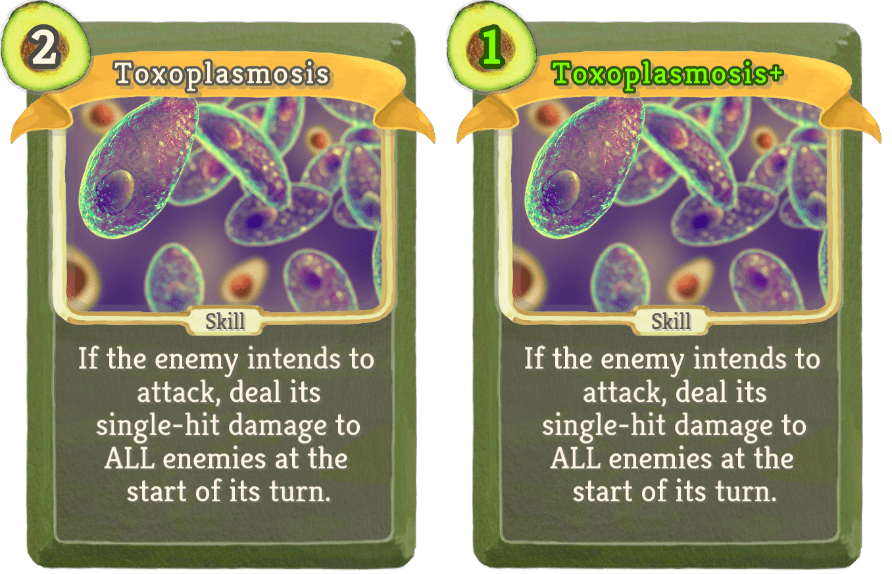 | Rare | Skill | 2 (1) | If the enemy intends to attack, deal its single-hit damage to ALL enemies at the start of its turn. |
| Name | Image | Tier | Pool | Description | Flavor |
|---|
| Carapace |  | Starter | Avocado_green | Start each combat with 2PlatedArmor. | Your armor is appealing. |
| Green Skull |  | Common | Avocado_green | While your HP is at or below 50%, you have 4 additional PlatedArmor. | A small skull collected from fallen ascenders. |
| Non-Newtonian Flesh | 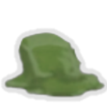 | Uncommon | Avocado_green | If you lost HP during the previous turn, gain Block equal to half your PlatedArmor at the start of your turn. | "Most curious! It appears to gain enormous viscosity upon being struck!" - Ranwid |
| Pit of Fury |  | Uncommon | Avocado_green | Whenever you lose HP, gain 2 temporary Strength. | This seed is just so angry. |
| Preserved Parasite |  | Uncommon | Avocado_green | Enemies in non-elite and non-boss encounters have 20% less HP | The parasite seems to create a shrinking aura that targets particularly normal enemies. |
| Start Codon |  | Uncommon | Avocado_green | Start each combat with 1 additional [E] for each Innate card in your deck | This piece of genetic information tells the avocado to just 'go'. |
| Suck Dummy |  | Rare | Avocado_green | Whenever you heal HP during combat, heal 2 additional HP | It's been sucked on |
| Tungsten Plate |  | Rare | Avocado_green | Reduce all PlatedArmor losses due to Peel by 1. | It's rly heavy. |
| Mark of Nausea | | Boss | Avocado_green | Gain 1 Energy at the start of your turn. At the start of combat, shuffle 3Slimeds into your draw pile. | This brand is used to signify parasites who have mastered nausea. |
| Sturdy Carapace |  | Boss | Avocado_green | Replaces Carapace. Start each combat with 2PlatedArmor. The first time you Peel each turn, gain 2 Metallicize. | Your armor is extremely appealing. |
| Twisted Tendril |  | Shop | Avocado_green | At the start of each combat, apply 3Constricted to ALL enemies. | It stretches and twists interminably, searching for anything to grab on to. |
{kind=link}
{kind=link}
{kind=link}
{kind=link}
{kind=link}
{kind=link}
{kind=link}
{kind=link}
{kind=link}
{kind=link}
{kind=link}
{kind=link}
{kind=link}
{kind=link}
{kind=link}
{kind=link}
{kind=link}
{kind=link}
{kind=link}
{kind=link}


{kind=link}
{kind=link}